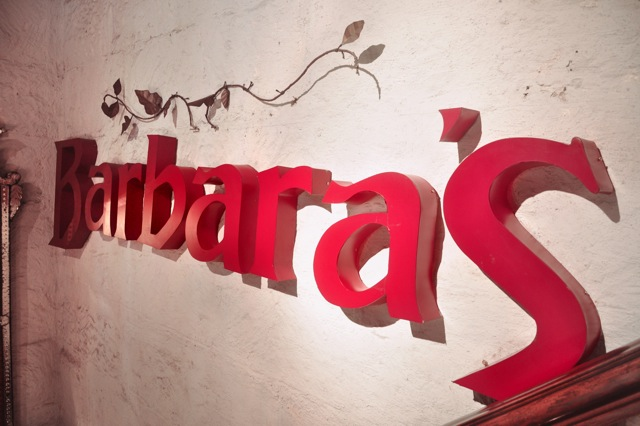
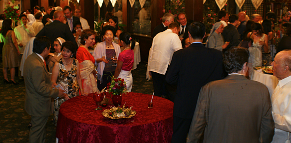

Heritage Restaurant
Barbara's Heritage Restaurant
Plaza San Luis Complex, Intramuros Manila
527-4086 / 527-3893 / 788-3356 / 527-4090
Restaurant Hours: Open entire week
11AM - 2PM : Lunch Buffet
6:30PM - 9PM : Dinner Buffet
About Barbaras
The company was first registered in 1972 as Admiral Manila Restaurant. We have engaged in the business of food and catering services for corporate and individual clients as well as in establishments served by the company.
Admiral Manila, a modest café restaurant along Gen. Malvar Street in Malate, served the student clientele of the Philippine Women’s University School of Fine Arts.
The Admiral Manila Restaurant was affiliated with Admiral Enterprises of Olongapo City, pioneers in the restaurant business and caterers to various Filipino-American groups. Admiral Enterprises owned and operated Admiral Royal Hotel and Restaurant, Admiral Continental Restaurant, Admiral Coffee Shop and Admiral Bakery.
Admiral Manila then moved to the management of employees’ Cafeterias serving the FILINVEST Group of Companies, the Philippine Packaging Corporation and Philippine Airlines.
It was affiliated with Quality Inn Resorts Hotel (White Rock) Subic Zambales. Admiral Manila’s President and General Manager, BARBARA GORDON DE LOS REYES, was the Vice President of the firm.
In 1982, Mrs. BARBARA GORDON DE LOS REYES co-founded and organized the Makati Skyline Restaurant in Legazpi Village, Makati. Barblyn Goods, Inc. was formed to manage Makati Skyline, with Mrs. DE LOS REYES, as the President and General Manager.
In 1986, the company decided to operate on its own, continuing the catering and canteen management operations under the new company name: BARBARA’S FOOD AND CATERING SERVICES, INC. and operated two more Philippine Airlines employees canteen: Philippine Airlines Data Center Building canteen and the Philippine Airlines “Sky Club”.
On February 1990, BARBARA’s Inc. assumed operations of the Ramon Magsaysay Center Cafeteria which became an addition to the company’s canteen outlets.
A few months later, the company opened another canteen in PAL’s Manila Domestic Terminal.
In 1992, Barbara’s Inc. took over the management of the Plaza San Luis Complex in Intramuros and in February 1993 completed the new Barbara’s Intramuros Restaurant Café, and the Sala Filipina Ballroom.
The company also acquired the exclusive rights to the function areas of the Intramuros Administration which included the Patio and Teatrillo of the Plaza San Luis Complex (Casa Manila).
The limited capacity of its banquet halls at Plaza San Luis Complex gave the company no other option but to establish another venue. Sitio Victoria Real Corporation was formed on August 1993 to manage Sitio Victoria, a three thousand two hundred (3,200) square meter property bounded by General Luna, Victoria and Cabildo Streets in Intramuros, Metro Manila. The new garden venue accommodated a total of one thousand two hundred (1,200) persons. It was given citation as a “Landmark Structure in the Development in Intramuros” by the United Architects of the Philippines in cooperation with the Intramuros Administration.
In July 1, 1995, Barbara’s Inc. also managed of the Employees Canteen of the Bristol Myers Squibb (Phil.). The canteen serves about 300-400 employees including the company’s official meetings and some of its functions.
In August of 1999, it opened another outlet at Trafalgar Plaza, Salcedo Village in Makati City and signed a Memorandum of Agreement with the new Celebrity Sports Club to handle its in-house restaurant and banquet operations.
As of today, Barbara's is still at Plaza San Luis Complex offering excellent food service with over all those years of experience behind it.